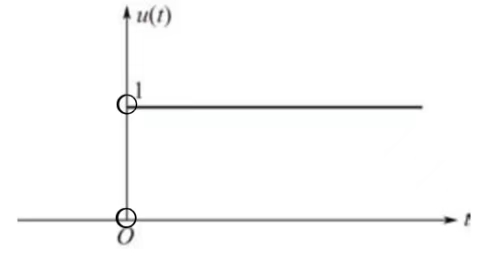

激励：输入信号
响应：输出信号
| 一维信号与高维信号 |
| 连续信号与离散信号 |
| 周期信号 |
| 奇信号与偶信号 |
自变量的取值连续的信号.
$$x(t),~t\in \mathbb{R}$$自变量的取值不连续的信号.
$$x[n],~n\in \mathbb{Z}$$信号关于原点对称.
$$x(-t) = -x(t)~or~x[-n] = -x[n]$$信号关于坐标纵轴对称.
$$x(-t) = x(t)~or~x[-n] = x[n]$$任何一个信号都可以分解为一个奇分量与一个偶分量之和.
$$\begin{align} x(t) &= [\frac{x(t) + x(-t)}{2}] + [\frac{x(t) - x(-t)}{2}]\\ &= x_e(t) + x_o(t) \end{align}$$\(u(t)\)在跳变点\(t=0\)处无意义.
\(Sa(t)\)为偶函数.
$$\int_{-\infty}^{+\infty} Sa(t) \mathrm{d}t = \pi$$ $$\int_{-\infty}^{+\infty} \frac{\sin(\omega t)}{t} \mathrm{d}t = \pi$$设\(y_1(t)\)/\(y_1[n]\)是系统对激励\(x_1(t)\)/\(x_1[n]\)的响应；\(y_2(t)\)/\(y_2[n]\)是系统对激励\(x_2(t)\)/\(x_2[n]\)的响应.
$$ax_1(t) + bx_2(t) \rightarrow ay_1(t) + by_2(t)$$ $$ax_1[n] + bx_2[n] \rightarrow ay_1[n] + by_2[n]$$其中\(a,b\in \mathbb{C}\)，满足上式的系统称为连续/离散时间线性系统.
线性系统具有叠加性与齐次性.
叠加性可表示为：
$$x_1(t) + x_2(t) \rightarrow y_1(t) + y_2(t)$$齐次性可表示为：
$$ax_1(t) \rightarrow ay_1(t)$$